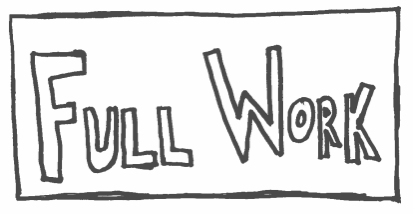

Developing Bucher’s concept of the “algorithmic imagination” for digital literacy research...
The Web is transforming along the tenets of data capitalism... This thesis unpacks how netizens’ disruptive digital literacies epitomize critical digital literacy in the algorithmic turn of Web 3.0.